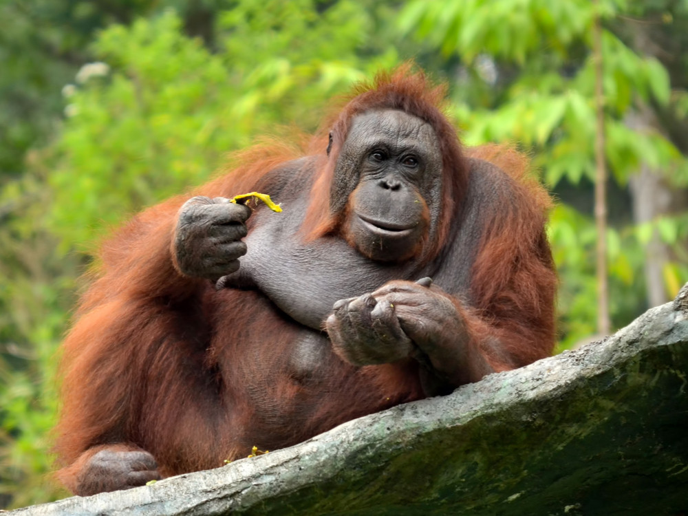

Top 3 mooiste plekken in Borneo
De mooiste plekken
Dit zijn 3 mooie plekken die je op Borneo kunt bezoeken.


1. Mount Kinabalu
Dit is een hoge berg waar veel mensen komen wandelen. Je hebt er een mooi uitzicht.
2. Orang-oetan opvang
Hier worden orang-oetans geholpen en beschermd. Je kunt meer over deze dieren leren.
3. Regenwouden
In de regenwouden leven dieren zoals orang-oetans, neusapen en olifanten.
Waarom Borneo bezoeken?
- Mooie natuur zien
- Bijzondere dieren ontdekken
- Door regenwouden wandelen
Overzicht van de plekken
| Plek | Wat kun je doen? |
|---|---|
| Mount Kinabalu | Wandelen en uitzicht bekijken |
| Orang-oetan opvang | Orang-oetans bekijken |
| Regenwouden | Dieren en planten ontdekken |
Borneo is een mooie bestemming voor mensen die van natuur houden.